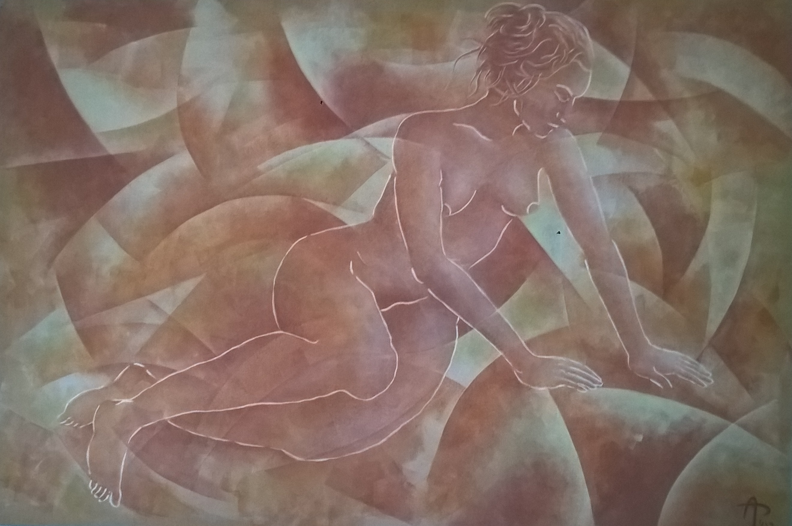

CV Gap One: this little gap is 1,35 x 2,10 meters. If you squint just a tiny bit, it's not even really visible.
If you prefer keeping your eyes wide open however, you might appreciate a few details about this. There is a wooden frame under the canvas of course. The canvas as such is burlap fabric, chosen for the rawer structure as well as for the ochre tint in its color, so that the fabric can act as the grounding color base. The actual founding under the painting layers is transparent. The painting as such is done in glasing color layers, with colors that were handmade from pigments with an acrylic binder, in order to avoid having to use harsh solvents for the painting process (the acrylic binder is water-soluble until dried).